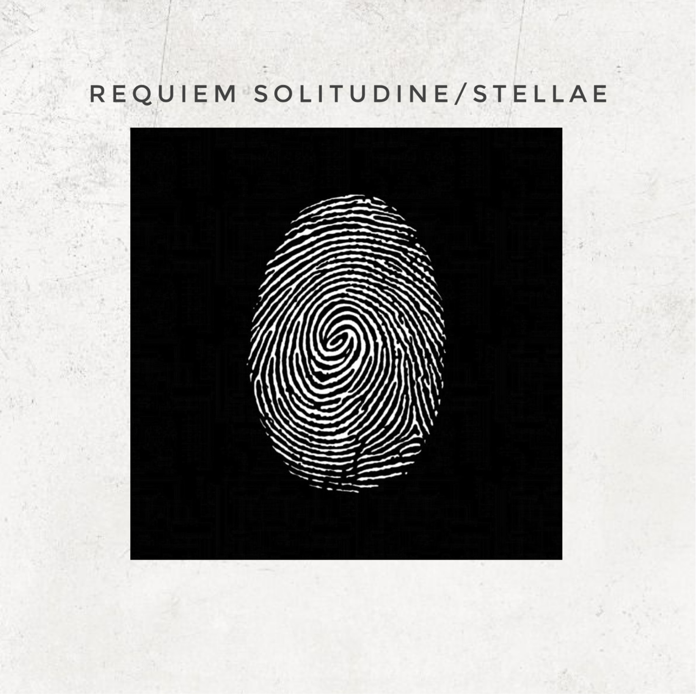

requiem solitudine
stellae - out now
latest release

about
Stellea is an instrumental progressive rock album produced entirely in BandLab. Drawing inspiration from the progressive rock movement of the 1970s, its four tracks each explore a unique musical identity and tell a different story.
track list
- I. frequencies
- II. sidereum nox
- III. burn
- IV. devil´s play
discography

Q&A
what are the influences?
The project is mainly influenced by 1970s progressive rock, drawing inspiration from bands such as Pink Floyd, King Crimson, Yes, Druid, Novalis, and Eloy.
What does "Requiem Solitudine" mean?
"Requiem Solitudine" roughly translates as "solitary repose" or "solitary rest." The name reflects the project's nature as a one-man endeavor, with much of the music being written and recorded during moments of rest and solitude.
what was the first song ever made by the band?
The first song was "Deep Red," from the album of the same name. What started as a simple composition gradually evolved into a 15-minute suite, eventually becoming the foundation around which the rest of the album was built.
how are the songs composed?
Most compositions start with a single melodic idea that gradually takes shape through hours of experimentation in the piano roll. From there, the entire piece is developed around that theme. The melody can be expanded, fragmented, transformed, or accelerated, generating new variations and helping the composition evolve organically.
contact
bandlab youtube